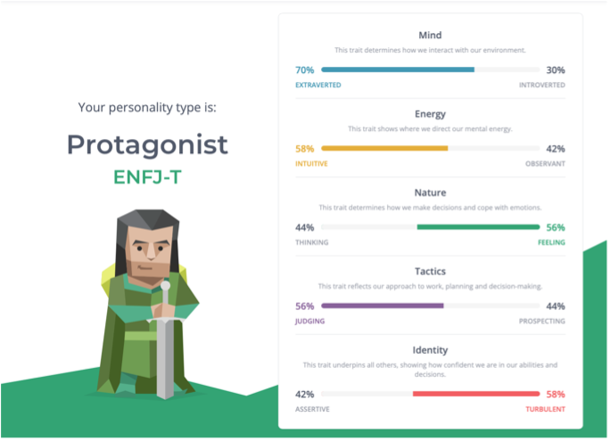
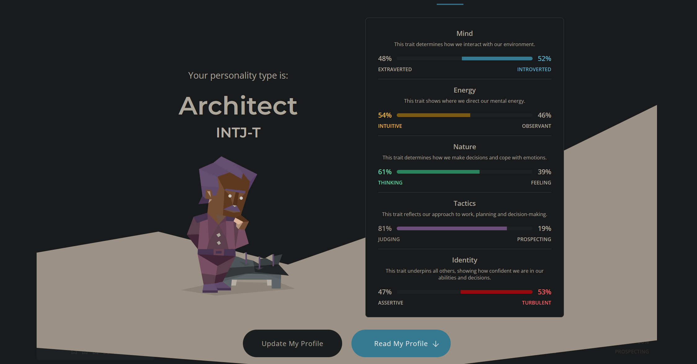

Group Profile
Team Profile
Team Name:
Half Covid
Personal Information
Name:
Dimosthenis (Dimos) Alexiou
Student Number:
s3957155
Student Email Address:
s3957155@student.rmit.edu.au
Background, Hobbies, IT Interest, and IT Experience:
My education tis acquiring my Cert III in Information, Digital, Media and Technology, which I got through my IT Traineeship. In my spare time I enjoy producing music on my MacBook (Ableton is the DAW I use), working on my fitness and sometimes a bit of gaming. My favourite sport is Soccer, and I play in a futsal team once a week. Present, my main interest in IT is in the Cyber Security field. The aspect of being in the mind of the attackers to prevent what they are doing fascinates me. My interest in IT all strands from my passion of technology, where from a young age I would dismantle old or broken technology (Computers, Stereos, DVD Players etc.) When I was 11 years old, an event that really sparked my growing interest for IT was when I successfully installed a “RGH” (Reset Glitch Hack) on my Xbox 360. The process of performing this “mod/hack” includes, soldering mod chips onto the console’s motherboard, which allows you to flash the nand and install custom firmware. From that day, my interest and passion for IT has only grown greater.
Team Profile
Myers Brigs:
www.16personalities.com
Dimos Results:

Matthew Results:

Nicholas Results:

Team Profile Myers Briggs Results:
The personalities that make up a team are very important because aside from the situation itself, this is what dictates how effective the team works together and what can be achieved. I think our teams results reflect how we worked together and how everyone interacted. There was no conflict for this assignment as we all did our parts and discussed how things would be divided for an even workload. The only negative reflection of our team was early communication and ice breaking where it took our group a while to warm up to each other and start the work and fall into our group dynamic.
Tools
GitHub
GitHub Website:
website
GitHub Repository:
https://github.com/dimos16/Assessment-2-Group-Profile
Comments on the audit trail on the Git repository:
comments
Canvas
Canvas Group:
group
Industry Data
IT Work
1.
Name: James Weston
Profession: Cyber Security Analyst
https://www.youtube.com/watch?v=IAFqgmpRJ-g&ab_channel=Inmarsat
- What kind of work is done by the IT professional?
James’ job as a cyber analyst consists of safeguarding the critical functions and data the company’s aviation, maritime and land-based customers. They do this monitoring and analysing network data flow, to prevent attackers from breaching their systems.
- What kinds of people does the IT professional interact with? Are they other IT professionals? Clients? Investors? The general public?
The IT professional I will be discussing is a Cyber Analyst who works at Inmarsat, protecting technical information relating to assets in space. The Cyber analyst group of the corporation are often working collaboratively in an office, but they still interact with other groups of the workplace if they require information from other colleagues.
- Where does the IT professional spend most of their time?
James would spend most of his time in office, working with colleagues, monitoring spikes in network traffic that indicates an attempted denial of service attacks, and increases in failed authentication attempts on a certain system to reveal breaching attempts.
- What aspect of their position is most challenging?
The most challenging thing part about a Cybersecurity role is the increasing number of bad guys distributing malware and infiltrating networks. With these attacks becoming more sophisticated, the cyber analysts must always try to be one step ahead of the breachers, by keeping as up to date as possible on the latest threats and exploits.
2.
Name: Justin Hammond
Profession: Software Engineer
https://www.youtube.com/watch?v=j1fc0FlCjyI&ab_channel=JustinHammond
- What kind of work is done by the IT professional?
The main type of work included in Justin’s day is meetings with colleagues to discuss project model’s the busines is working on, coding, reviewing fellow co-workers’ code and giving feedback on that code.
- What kinds of people does the IT professional interact with? Are they other IT professionals? Clients? Investors? The general public?
Justin works from home as a software engineer, where he usually starts his day by checking emails which are mostly about code and reviewing code that his co-workers have submitted and leaving feedback. He interacts with his colleagues via online meetings where they discuss what they are working on; what they did, what they plan to do, and any barriers they face.
- Where does the IT professional spend most of their time?
Justin would spend most of his work time on his computer, where he codes, reviews code, discusses projects with colleagues, and give feedback on co-workers code.
- What aspect of their position is most challenging?
The most challenging aspect of Justin’s job would be the communication with his colleagues, due to him and other co-workers working from home. Effective communicate between business partners, customers, and colleagues becomes more of a challenge when you are working from home.
3.
Name: Marko
Profession: Software Engineer
https://www.youtube.com/watch?v=tQG6jYy9xto&ab_channel=Marko
- What kind of work is done by the IT professional?
Marko’s job at the Kahoot Office includes daily backend stand-up meetings, coding, and debugging.
- What kinds of people does the IT professional interact with? Are they other IT professionals? Clients? Investors? The general public?
Marko starts off his day at work by doing a daily backend stand-up with a colleague, he will then does a bit of coding after his lunch break. He will then get a bit of fresh air at around 2, while reviewing different code projects outside. This is followed by his end of day coding session where he will continue coding from where he left off.
- Where does the IT professional spend most of their time?
Marko would spend most of his work time reviewing code projects, debugging, and exchanging feedback with other colleagues. The rest of his time would be spent in meetings.
- What aspect of their position is most challenging?
I would assume that the most challenging aspect of Marko’s job (as he didn’t mention it in the video), would be the debugging of collaborative coding projects, as according to Brian Kernighan, “Debugging is twice as hard as writing the code in the first place. Therefore, if you write the code as cleverly as possible, you are, by definition, not smart enough to debug it" (Brian Kernighan, 2015). Members of the software team work collaboratively on projects; when Marko is to perform debugging on a collaborative project, it could be a difficult task, as not everyone follows the same coding rules.
4.
Name: Josh Madakor
Profession: Cyber Security Analyst
https://www.youtube.com/watch?v=uHy3oM7NnoU&ab_channel=JoshMadakor
- What kind of work is done by the IT professional?
Josh works as a cyber analyst for Microsoft. The project that Josh was working on at the time he was making the video was developing the “Azure Security Benchmark”, which he explains is a “checklist of things that you can do to secure any of the recourses in Azure.” This checklist is used to map security controls like the CIS Security Controls and NIST 800-53. Basically he takes the resources from Azure, view the different controls included in CIS and NIST 800-53 and develop the checklist for every resource in Azure.
- What kinds of people does the IT professional interact with? Are they other IT professionals? Clients? Investors? The general public?
Josh would communicate to his colleagues via meetings and emails, where they would discuss what they have been working on, and what they need to do next. I believe Josh and his colleagues would communicate to his colleagues via one of these communication tools at least once a day, as he mentions that on his average day his boss will tell give him instructions on various things they will be working on. E.g. Building the security benchmark for Azure virtual machines.
- Where does the IT professional spend most of their time?
Josh would spend nearly all his work time on his computer. This is where Josh works collaboratively and intuitively on project the company is working on, such as the ones previously mentioned.
- What aspect of their position is most challenging?
Working as a cyber analyst you face a lot of underlying challenges, but I believe the most challenging aspects about Josh’s job is the is keeping up with technology changes, developing new solutions, and constant vulnerabilities. These aspects would inherently more difficult, especially working for a company as big as Microsoft.
5.
Name: Ben Walker
Profession: Information Systems Technician
https://www.defencejobs.gov.au/jobs/army/information-systems-technician
- What kind of work is done by the IT professional?
Provides technical support and maintenance for systems around the infrastructure, installing networks and databases and installing hardware and software. Since the technicians are the ones who install these systems, it is their job in maintaining them and providing the technical support for the system users.
- What kinds of people does the IT professional interact with? Are they other IT professionals? Clients? Investors? The general public?
Ben generally works with Brigade staff to provide coordination of assets in the First Combat Brigade. He collaborates with other trades within the Signals Corp to provide this capability.
- Where does the IT professional spend most of their time?
Ben spends half his time in barracks and half his time in the field. In barracks he focuses on maintaining equipment and organizing solutions for systems rollouts in the future. In the field he sets up, maintains and supports the systems he made in barracks and provides Level 1 support to Brigade staff as well as general soldier duties.
- What aspect of their position is most challenging?
The most challenging part of Ben’s job is securely setting up the systems and working to all the Defence standards put in place to ensure the system is secure safe from outside threats.
6.
Name:
Profession:
https://www.defencejobs.gov.au/jobs/army/information-systems-technician
- What kind of work is done by the IT professional?
- What kinds of people does the IT professional interact with? Are they other IT professionals? Clients? Investors? The general public?
- Where does the IT professional spend most of their time?
- What aspect of their position is most challenging?
7.
Name:
Profession:
https://www.defencejobs.gov.au/jobs/army/information-systems-technician
- What kind of work is done by the IT professional?
- What kinds of people does the IT professional interact with? Are they other IT professionals? Clients? Investors? The general public?
- Where does the IT professional spend most of their time?
- What aspect of their position is most challenging?
8.
Name:
Profession:
https://www.defencejobs.gov.au/jobs/army/information-systems-technician
- What kind of work is done by the IT professional?
- What kinds of people does the IT professional interact with? Are they other IT professionals? Clients? Investors? The general public?
- Where does the IT professional spend most of their time?
- What aspect of their position is most challenging?
IT Technologies
Cybersecurity (Dimos)
- What does it do? (600 words)
Cybersecurity is an ever-growing development in IT and is only becoming more prominent in our day and age. IT is essentially the backbone of humanity, and with such an important element powering our lives, we need something that will protect these systems. That’s where cybersecurity comes in. For every action there is an equal and opposite reaction (Isaac Newton), the same sort of concept applies in IT and breachers of IT. With IT becoming more populated and technological developments advancing, the same is happening with the breachers of this system. That is why cybersecurity is such a crucial element in the IT industry, and constantly needs to be updated to protect us from the ever-growing threats.
The need for cybersecurity specialists is at an all-time high, as cybercrime is expensive, and our society is more technologically reliant than ever. “The number of data breaches and the cost of cybercrime worldwide have rapidly increased: the total cost by 2021 is expected to be double that of 2015.” (Tulane University, 2021). For cybercrime to double in a span of 6 years, is a massive increase. With this in mind, we can expect the need for cybersecurity related jobs to be on the constant rise in the near future. For us to ensure and maintain system Integrity for the upcoming years, we must educate and increase awareness to prevent these cyber threats. We are already starting to increase awareness by promoting best cybersecurity practices in mandatory businesses cybersecurity meetings and addressing these practices, to maintain system integrity. As the one of the main reasons systems become infected is due to unawareness of these practices; a big one is uneducated staff clicking on phishing links. Some of these practices include telling people not to use the same password for multiple accounts connected to the same email, always check links before clicking them, and keeping software up to date to name a few. I believe in the coming years, cybersecurity education and awareness will become more prominent, as the breachers of these systems are on the swift increase. In the past 3-4 years I have noticed the increase of multi-factor-authentication being implemented into systems, and I believe eventually everything that requires a password will have this feature. If we fail to keep these systems up to date and stop caring about people’s awareness of these practices, it could result in a big instability of IT.
The technological development that has forced cybersecurity to be implemented, is the vulnerability personal data, and breachers developing new ways to steal this data. Ever since people have started storing important data on their machines, there have always been people out to extort this data for profit. With developments such as cloud computing, it has increased the need for cybersecurity consultants due to the constant maintenance required to ensure everyone’s data is secure. With millions of people’s information stored on these cloud services, it has become a major issue for cybersecurity. As more businesses are implementing cloud services, the opportunity for cyberattacks grows. Cybercriminals notice this and see it as an opportunity to breach these cloud services to profit from their data. Another development that is susceptible to cyberattacks is the IoT (Internet of Things). In the near future, we will be seeing more of this service being developed and implemented into homes and business; this also leaves us with the underlying issue of attackers finding ways to infiltrate these systems, so it will increase the need of cyber specialists to prevent these attacks. With everything being interconnected in an IoT setup, the impact a cyberattack would have on this system could be catastrophic. Let’s say you have your home front door lock connected to your IoT setup, attackers could potentially breach this system and break into your house. These are just a few of the technological developments that has driven cybersecurity to be put into practice.
-What is the likely impact? (300 words)
Cybercrime is expensive. The impact of cybersecurity being implemented has saved a lot of money for businesses and the IT industry as a whole. The main objective of cybersecurity is to prevent attackers from infiltrating systems and maintaining system integrity. There will always be a constant need for workers in this field of IT, as there will always be people finding ways to breach these systems. “Cybercrime to Top $6 Trillion in 2021, According to Cybersecurity Ventures” (Cybersecurity Ventures, 2021). It is evident that the impact of cybercrime has become one of the most expensive categories of criminal offence. With this in mind, we can expect this form of criminal offences to cost the world almost $10.5 Trillion in 2025. “Cybercrime to cost the world” (Cybersecurity Ventures, 2021). That is an increase of nearly 180% in a span of 4 years. With cybercrime growing this exponentially, the affect it could have on the world in the near future could be substantially big. For cybercrime to hit “$10.5 Trillion in 2025” (Cybersecurity Ventures, 2021), and “the physical money present globally is around $40 trillion” (GOBankingRates.com, 2021); that’s nearly a $5 trillion hit to the world’s economy. Knowing this, we can really take into perspective of just how much this will affect the world’s economy. With cybercrime expected to have such a big impact on the world’s economy, this will inevitably affect not just everyone who uses IT in their daily life (which is most people anyway), but any person that contributes to the world’s economy will be impacted by this. For the incoming years, cybersecurity is going to be playing an extraordinary role in protecting the world from these cyber threats. This will produce an even larger need for jobs in the cybersecurity field to inherently decrease the number of cyber-attacks that the world will inevitably undergo.
- How will this affect you? (300 words)
Cybersecurity has a great impact on my life, as it assists me in maintaining all my digital assets (social media, online banking, online commerce accounts, cloud data, etc). If cybersecurity didn’t exist, I’m sure I, and many others would have lost a lot of valuable data and money if this system wasn’t in place. With technology growing at the rapid rate that it is, cybercrime is inevitable, and it is evident the previously discussed points, is going to have an extraordinary impact on the world. But how will this affect me and my family and friends? The incoming cyber threats that we are facing is going to affect everyone. We don’t exactly know what threats we will are going to be facing in the future, but we can assume that these attacks will be targeting the areas in which they are able to make the most profit. With this in mind, we can anticipate that these attackers will be targeting businesses, online finance, and confidential government information used for ransomware. These are just some of the areas that are going to be targeted by cybercriminals, so we can rule out that anyone working for a business, and has data stored in business servers, will be susceptible to cyber threats, and will inevitably be affected by at least one cyber-attack in the upcoming years. Anyone who uses online banking will be susceptible to these cyber-threats, as although banks have a reputation for having secure systems, this does not mean they don’t slip up at times. Take the time that Experian, credit card reporting company, was breached by a cyber-attack as an example. “According to the South African Banking Risk Information Center (SABRIC) - one of the authorities involved in investigations - 24 million customers and almost 800,000 businesses were impacted by the breach.” (SABRIC, 2022) All these accounts were compromised due to this attack as their emails, mobile numbers, job titles, etc, were all exposed. These are just a few of the types of attacks we can anticipate to see in the near future, and proof that cybercrime will impact pretty much everyone.
Autonomous Cars (Matthew)
- What does it do? (600 words)
An autonomous car is a vehicle that can control its own movement with or without driver input. The need for a driver is reduced or removed by the use of advanced software, cameras and sensors to allow the software to safely drive the vehicle on the road amongst other road users. The cameras provide a constant feed of information to the software so that at any one time the information the autonomous vehicle has is as only old as it takes to process from the camera and analyse. This allows for greater reaction time and better situational awareness when something is correctly identified and used as a point of reference or observed as another road user by the vehicle. This works both ways however, if the vehicle does not detect the other road user they could put themselves and others at risk by performing a dangerous lane chance and ‘cut off’ another road user or even worse, merge directly into another vehicle. It is examples like this that is why the manufacturers of autonomous cars use sensors as well, while not able to identify and map traffic around them sensors are able to detect things more accurately when close to the vehicle and which almost acts as a failsafe if the cameras fail to detect another road user or potential hazard. Sensor technology is becoming more advanced and is used in cars that are operated by a human as a way of increasing safety and giving every driver a 6th sense so to speak. Most modern cars have their sensors able to control braking in an emergency situation and some vehicles like modern Ford’s have adaptive cruise control that allows the driver to stay in the same lane while using cruise control, using sensors to detect where the lines are on the road, where the next vehicle is in the same lane and allowing the driver to set the speed and distance to traffic in front of them that is preferred, eg. A larger space if driving in wet or hazardous conditions. It is technology like this that is the stepping stone to fully autonomous vehicles that will also help drivers transition to the driverless future. Google are also using similar technology including the use of radar to efficiently map the location of objects and the surrounding areas of the vehicle as it moves, this when compiled with cameras allows them to map how things are moving and pre-emptively stop or react to a potential threat.
Tesla is the most talked about creator of autonomous vehicles as they have the most public research and development as well as the showmanship of the CEO Elon Musk. Currently the Tesla autonomous vehicle technology is called Autopilot and all Tesla’s are able to buy into the Beta program and use the features as they roll out and opt in to sharing road data for R and D. This technology is in the beta stage and is being tested by Tesla drivers before being rolled out as a main feature of the manufactures fleet. Tesla have a disclaimer that currently autopilot controlled vehicles do require human supervision so they are not fully autonomous but do require the driver to have less control on the vehicle than any other manufacturer at this time. Features like autosteer that keeps the vehicle in its lane as well as features like adaptive cruise control make Tesla’s the market leader for this technology.
- What is the likely impact? (300 words)
I think a likely impact that I will see in my lifetime is the removal of any driving profession as the need for a physical driver to be present becomes less and less. For example shipping costs would be reduced massively and shipping times improved as the need for drivers becomes less and less and people who could drive 8 hours a day are replaced by driverless trucks that can driver 24 hours a day – loading / unloading times and refuelling times. I think this technology will be one of the most impactful to quality of life as it automates a large chunk of the transport and logistics industry. Where the application may begin on roads could soon spread to automated trains, warehousing with autonomous forklifts and so much more that used to require a humans recognition and logic skills but could be run by a synchronised system especially on a closed circuit like a rail network or warehouse. Once the technology is sound I think it will be built on for all sorts of delivery services, like Uber eats, Australia Post and even corporate applications such as a timber yard that previously had two drivers in a truck would be able to have an autonomous driver take the goods to a job site and then an autonomous crane unload the goods for the workers. Overall I see this as an improvement on the current system and would allow for more efficient 24/7 logistics and shipping work to be done because what previously may have only been done for 8-9 hours a day could be done 24/7 or even to user demands, for example packages being delivered from 1600 onwards every day.
- How will this affect you? (300 words)
I think this will affect me because of the reduction in low skill jobs in the transport and logistics industries will push people into getting higher skilled network and mechanical jobs to maintain the fleet of autonomous vehicles that replaced them as the main worker that provides the service to the customer. I see this as a good thing because of the convenience and for the end user as well as the opportunity for the average worker to get into a better paying job that gives them more skills compared to if they stayed as a truck driver. Personally this presents a good opportunity as someone working in IT specifically in networking and system administration, it only increases demand for my trade and people with my skillset that will be needed to keep the new systems running and all the vehicles on time. As an end user as well this only improves my quality of life as living in Darwin we could potentially see more trucks and better shipping times to the Northern Territory as it would be a 24 hour trip for an autonomous vehicle compared to a manned 3 day trip through the centre from Adelaide. It would also add a layer of convenience when wanting to travel to see family in Melbourne as once adopted and improved on the applications are endless and could even stretch to air travel reducing the cost for interstate travel. Long term it will also effect my main hobby, four wheel driving and could potentially remove it entirely except for in older vehicles that would slowly become obsolete as electric vehicles take over.
Project Ideas
Calculator (With History Function)
- Motivation
The motivation for this project is that I am a forgetful person and sometimes forget what I had previously calculated when doing projects around the house or when calculating things. Having a calculator program that could automatically write down calculations made I think would be beneficial to a variety of users and would increase efficiency and reduce the chance of errors from people misremembering a number or incorrectly calculating what they had previously done. Being able to see the previous calculations made and the results would allow for the user to pick up on any errors that they had made in previous calculations rather than use the incorrect result and creating further errors in their work.
- Description
The Memory Calculator would be a PC program that would contain a simple layout to make it user friendly and easy to understand comprising of a basic numpad layout for the user to interact with the software and support for direct input from either mouse or keyboard. Above the numpad would be a bar showing the current unexecuted equation or the result of the previously executed equation. On the righthand side of the program would be the history bar showing all the previous calculations and results. The biggest feature would be the history shown by the calculator and the base calculator software. The base calculator software would contain the basic math functions of a calculator add, subtract, divide and multiply.
The calculator functionality would be basic to be compatible for the history function to work. The calculator would have a memory in the sense that it would save the previous input and calculation to the history tab but would not have the ability to add to the previous output. Eg. 2+2=4 would not be recalculated as 4+2=6. I feel a function like reinputting could create problems in the back end when referencing functions for the history bar.
The History function would push the old calculations down one line when a new calculation is made with the new answer being displayed until a new input is made and the full problem and answer being displayed in the top line in the history bar with the most recent being at the top and the older problems and answers being displayed below that. For example; the input was 2+2=4 the calculator would display 4 in the current bar and 2+2=4 in the top line of the history. Eventually after a few lines the calculator would dump the previous history as it replaced the top line with new problems and answers pushing them down from most recent to oldest. This function would also be very useful to the end user as they could copy the whole line and paste it into a document or excel sheet to show workings out for how they got their final numbers.
The GUI would be basic but functional. By minimizing the amount of random text and focusing on the meat of the program it will be presented as a more professional program. This will include having basic outlines for buttons and colours that work well together as the three colour elements will be for text, buttons and current input or history bar.
- Tools & Technology
I believe that python would be the best language to create the Memory Calculators. It would allow for minimal hardware requirements to be able to run and store the software and would be easier to modify for later additional features to be added. Memory Calculator would also require a keyboard and mouse for user entry and a scree for the display of the GUI. Memory Calculator wouldn’t have an independent software aside from a copy of Windows as the final product would be a .exe file.
- Skills
The skills required to create Memory Calculator are a basic knowledge of python coding and a rough ability to create a simple styled GUI for the user to interact and understand. It would be very easy to find this skillset especially among recent or current students undertaking tertiary education in IT. Python is often used as the first language that people learn as it is easy to pick up and is very capable in what you can create with it. The hardware would be minimal as it is a basic program and has no CPU or GPU intensive software to create or run.
- Outcome
If the project is successful then a complete product will have been created. The Memory Calculator would be able to fulfil all the uses of a standard calculator and then be able to retain previous calculations and results for the user to reuse or write down. The impact of this software is that it will give a better alternative to the software that is packaged into Windows for basic maths and allow for a user-friendly solution to be adopted by those with poor memories or people that work with numbers that they need to reuse or otherwise remember.
Group Reflection
Dimos (200 Words):
- What went well?
The way we were able to organise ourselves into a group, utilise our meeting time as efficiently as possible and assign roles and deadlines to each member of the group to complete certain elements of the assignment within a certain amount of time.
- What could be improved?
What we struggled with most was sparking that first initial momentum to lay out everything as a group. We weren’t able to have our first meeting until the second week of the assignment, but as soon as we were able to have that first meeting, we were able to develop an initial plan for us to complete the assignment.
- At least one thing that was surprising
The most surprising thing to me was the ability of the all the contributing members to complete the assigned sections of the assignment by the deadlines that were discussed in meetings. Not even one of us failed to complete our assigned sections before the deadline. This was a big surprise to me, as the workload that was brought on all of us was pretty significant, and everyone was able to complete their jobs smooth and concisely.
- At least one thing that you have learned about groups
I have learnt a lot of valuable information after contributing to my first group university assignment, but the main thing I have learnt is to as soon as you get into a group, start gathering ideas promptly. This is one thing that our group could’ve improved on, but once we were able to gain that initial momentum, we were able to complete set goals.
Matthew (200 Words):
- What went well?
I think the use of Microsoft teams was the best organization tool as our team was separated by a distance of 3,000km as the crow flies and the ability to share files, direct message and host meetings all in the same space was great.
- What could be improved?
I think how we structured the work that we completed doesn’t show the combined effort that was put in by team members. I provided lots of the written content for the assignment and Dimo was in charge of collecting and creating the GitHub site to present all the content.
- At least one thing that was surprising
How much more effective instant messages were than a meeting. Having timezone and scheduling differences meant that it was better for us to all leave notes of what we were doing to give the others in the group an idea of what we were doing and share the situational awareness that we had so no one was stressing over the assignment.
- At least one thing that you have learned about groups
I have learnt that a group can function more collaboratively when individuals claim work that they want to do rather than get allocated work.
Nicholas (200 Words):
- What went well?
- What could be improved?
- At least one thing that was surprising
- At least one thing that you have learned about groups
Group Reflection (400 Words):
- What went well?
Our group off the bat was using instant messaging to provide coordination of effort to allow us to get the small things done first and then collaborate more when we decoded the assignment and were able to split the assignment into the main parts. By doing this we removed the stress and gave all group members an individual tasking so that group members only had to do their parts. As all members worked on their own parts it allowed us to get the work done around our schedules and give Dimo all the information at the end to organize and standardize before putting on the GitHub site that he created.
- What could be improved?
Something that could have been improved on was our belief that Vincent was going to return to finish the assignment. Initially he wanted to work with us and after giving him the benefit of the doubt when he was unresponsive we were forced to split his workload among the remaining members of the group as that we didn’t miss sections of the assignment and were racing against the clock and working around the commitments of our schedules.
- At least one thing that was surprising
One thing that was surprising was how well the group recovered from the loss of Vincent and 25% of the manpower of the group. The division of his work split 33% each way was good because while looking like a large amount of work it ended up being another 8.3% of the overall assignment to the remaining team members which after the initial organization worked out and was able to be covered so that we could maintain a similar or better mark as to what we would have got had Vincent participated.
- At least one thing that you have learned about groups
One lesson that was learned by all group members is that group dynamics and workload can change very quickly and often detrimentally to the group members when people don’t carry their weight or drop out. Communication is key in reducing the amount of damage and the time needed to recover from such an incident and setting out a timeline was definitely a savior as we allowed enough time should he remain unresponsive that it was practical for us to cover his work without a detrimental effect on our commitments outside of study or our overall mark.
References
IT Work:
1.
James Weston, Cyber Security Analyst, whole video, viewed 9th April 2022
https://www.youtube.com/watch?v=IAFqgmpRJ-g&ab_channel=Inmarsat
2.
Justin Hammond, Software Engineer, whole video, viewed 9th April 2022
https://www.youtube.com/watch?v=j1fc0FlCjyI&ab_channel=JustinHammond
3.
Marko, Software Engineer, whole video, viewed 9th April 2022
https://www.youtube.com/watch?v=tQG6jYy9xto&ab_channel=Marko
Brian Kernighan, quote, viewed 9th April 2022
https://futurice.com/blog/why-debugging-is-all-about-understanding#:~:text=Code%20which%20looks%20obvious%20and,smart%20enough%20to%20debug%20it.%22
4.
Josh Madakor, Cyber Security Analyst, whole video, viewed 11th April 2022
https://www.youtube.com/watch?v=uHy3oM7NnoU&ab_channel=JoshMadakor
5.
Ben Walker, Information Systems Technician, whole page, viewed 17th April 2022
https://www.defencejobs.gov.au/jobs/army/information-systems-technician
6.
Shawn C, Software Engineer, whole video, viewed 10th April 2022
https://www.youtube.com/watch?v=RikkkAGfwx4&ab_channel=ShawnC
IT Technologies:
Cybersecurity
What does it do?
Tulane University, whole page, viewed 3th April 2022
https://sopa.tulane.edu/blog/four-reasons-cybersecurity-field-rapidly-growing
What is the likely impact?
Cybersecurity Ventures, whole page, viewed 3th April 2022
https://www.nbcdfw.com/news/tech/cybercrime-to-top-6-trillion-in-2021-north-texas-security-firm-says/2636083/
Cybersecurity Ventures, whole page, viewed 4th April 2022
https://cybersecurityventures.com/hackerpocalypse-cybercrime-report-2016/
GOBankingRates.com, quote, viewed 4th April 2022
https://www.gobankingrates.com/money/economy/how-much-money-is-in-the-world/#:~:text=There%20is%20around%20%2440%20trillion,are%20added%20to%20that%20total.
How will this affect you?
South African Banking Risk Information Center (SABRIC), whole page, viewed 6th April 2022
https://www.upguard.com/blog/biggest-data-breaches-financial-services
Autonomous Cars
Jenny Cusack, Whole page reference, viewed 10th April 2022
https://www.bbc.com/future/article/20211126-how-driverless-cars-will-change-our-world
Tesla Autopilot team, Whole page reference, viewed 10th April 2022
https://www.tesla.com/en_AU/autopilot
Tesla Autopilot team, Whole page reference, viewed 10th April 2022
https://www.tesla.com/en_AE/support/autopilot-and-full-self-driving-capability
Waymo Autopilot team, Whole page reference, viewed 10th April 2022
https://waymo.com/